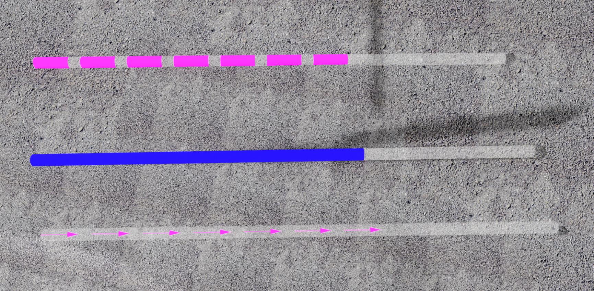
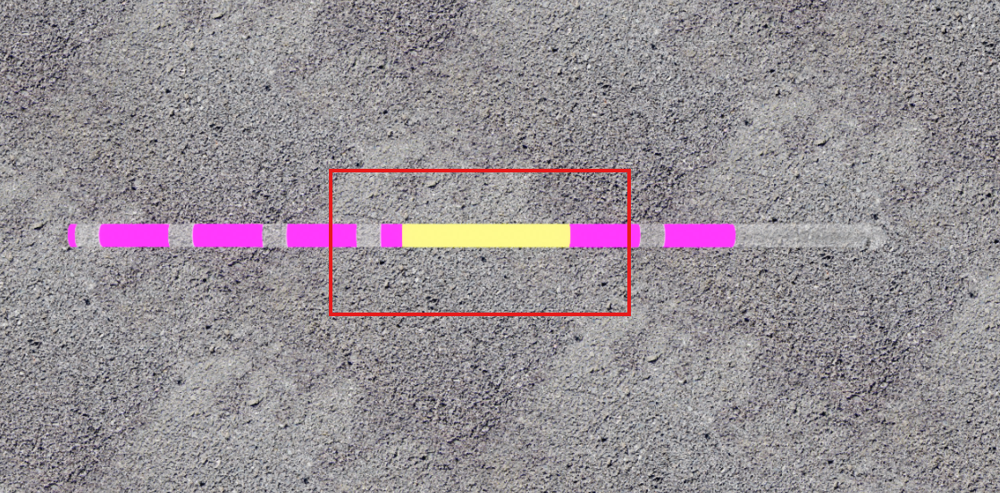
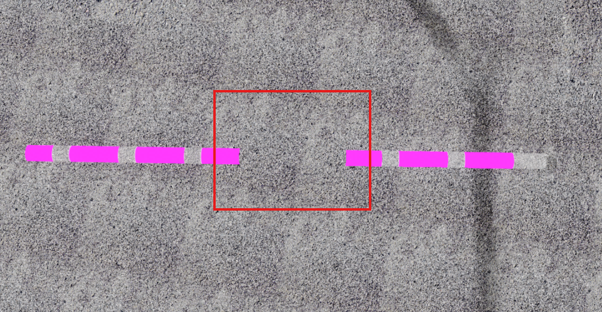

흐름 객체 (파이프)
목차
흐름 객체는 유속·전류·유체처럼 경로를 따라 이동하는 데이터를 3D 파이프 형상으로 표현하는 객체입니다. 파이프 몸통은 배경으로 그려지고, 그 위를 색 띠·채움·화살표가 지나가는 애니메이션으로 흐름을 표현합니다.
- 파이프 몸통(base): 경로 전체를 감싸는 배경 튜브입니다.
color,opacity,piperadius로 지정합니다.- 흐름(flow): 몸통 위를 지나가는 움직이는 부분입니다.
flowType과flowStyle로 모양을,flowSpeed로 속도를 지정합니다.- 구간(section): 파이프의 일부만 다른 색으로 강조한 영역입니다. 흐름이 이 영역에 들어오고 나가는 시점을 이벤트로 받을 수 있습니다.
1. 흐름 객체 생성하기
U3dFlowPipe 생성자로 흐름 객체를 만들고, U3dVectorLayer.addGeometry로 레이어에 등록하면 화면에 표시됩니다.
레이어를 만들고 도형을 등록·제거하는 방법은 3D Geometry 시작하기 - 도형 등록하고 제거하기에서 설명합니다.
흐름 표현 방식은 flowType으로 고릅니다. COLOR_BAND는 일정 길이의 색 띠 여러 개가 지나가고, COLOR_FILL은 파이프가 앞에서부터 채워지며, ARROW는 화살표가 이동합니다.
흐름 애니메이션은 flowStart()를 호출하기 전까지 움직이지 않습니다.
API
U3dFlowPipe(opt) : 흐름 파이프 객체를 생성하는 생성자
매개변수
opt(object) : 흐름 객체 생성 옵션opt.name(string) : 흐름 객체 이름opt.flowType(string) : 흐름 타입 ('COLOR_BAND','COLOR_FILL','ARROW'). 기본값:'COLOR_BAND'opt.flowStyle(object) : 흐름 스타일opt.flowSpeed(number) : 흐름 애니메이션 속도(m/s). 기본값:100opt.loop(boolean) : 흐름 애니메이션 반복 여부. 기본값:trueopt.color(ColorRepresentation) : 파이프 몸통 색상. 기본값:0xff0000opt.opacity(number) : 파이프 몸통 투명도(0~1)opt.piperadius(number) : 파이프 반지름. 기본값:2opt.tension(number) : 경로 곡률(0~1).0이면 직선으로 이어집니다. 기본값:0.5opt.radiusSegments(number) : 원둘레 세분화 정도. 기본값:16opt.closed(boolean) : 파이프 양끝을 이어 닫을지 여부. 기본값:falseopt.vertices(Array<WorldPositionVector3>) : 경로를 이루는 정점 배열 (월드 좌표, EPSG:3857)
흐름 스타일
flowStyle은 흐름 부분의 모양을 정하는 옵션 묶음입니다.
flowStyle.color(ColorRepresentation) : 흐름 색상. 기본값:'#ffcc00'flowStyle.opacity(number) : 흐름 투명도(0~1). 기본값:1flowStyle.bandLength(number) : 띠·화살표 하나의 길이(m). 기본값:30flowStyle.bandNum(number) : 한 번에 흐르는 띠·화살표 개수. 기본값:10flowStyle.bandGap(number) : 띠·화살표 사이의 간격(m). 기본값:10flowStyle.softness(number) : 흐름 앞뒤 끝을 흐리게 만드는 정도. 권장 범위 0~0.25. 기본값:0.5flowStyle.autoNum(boolean) : 경로 길이에 맞춰 개수를 자동으로 늘릴지 여부. 기본값:falseflowStyle.isWave(boolean) : 파형 표현 사용 여부. 기본값:trueflowStyle.arrowWidth(number) : 화살표 너비 (ARROW일 때). 기본값:3flowStyle.aroundRepeat(number) : 파이프 둘레를 따라 반복할 화살표 개수 (ARROW일 때). 기본값:1
1. 흐름 객체 생성 예제
색 띠(COLOR_BAND) 모드로 흐름 객체를 만들어 벡터 레이어에 등록하는 예제입니다.
const app = new GeOnDT.U3dAPP({containername: 'map'});
const vectorLayer = new GeOnDT.vector.U3dVectorLayer({name: 'vector'});
const flowPipe = new GeOnDT.geom.U3dFlowPipe({
name: 'flow_1',
color: '#ffffff', // 파이프 몸통 색상
opacity: 0.1, // 파이프 몸통 투명도
piperadius: 5, // 파이프 반지름
tension: 0, // 0이면 직선
flowType: 'COLOR_BAND', // 색 띠 모드
flowSpeed: 50,
flowStyle: {
color: '#ff0000',
opacity: 1,
softness: 0,
bandLength: 30,
bandNum: 10,
bandGap: 10
}
});
vectorLayer.addGeometry(flowPipe); // 벡터 레이어에 추가
flowPipe.flowStart(); // 애니메이션 시작
2. 흐름 타입별 표현 차이
같은 경로에 흐름 타입만 바꿔 적용한 결과입니다.

2. 경로 연장하기
레이어에 등록한 뒤 addWorldPosition으로 월드 좌표를 순서대로 넣으면 그 좌표까지 파이프가 이어집니다. 입력한 좌표는 경로의 기준점이 되어 경로 확장과 곡률 계산에 함께 반영됩니다.
tension이 0보다 크면 기준점 사이가 곡선으로 이어지므로, 좌표를 촘촘히 넣을수록 원래 경로에 가깝게 표현됩니다.
API
U3dFlowPipe.addWorldPosition(x, y, z) : 파이프를 해당 월드 좌표까지 연장하는 함수
매개변수
x(number) : X 월드 좌표 (EPSG:3857)y(number) : Y 월드 좌표 (EPSG:3857)z(number) : Z 월드 좌표 (EPSG:3857)
API
U3dFlowPipe.getLength() : 경로의 전체 길이를 반환하는 함수
반환값
return(number | undefined) : 경로 길이(m). 경로가 아직 없으면undefined
1. 클릭한 지점으로 경로 연장 예제
지도를 클릭할 때마다 그 지점까지 파이프를 연장하는 예제입니다.
app.on('click', (e) => {
const flowPipe = vectorLayer.getGeometryByName('flow_1');
const world = app.closestPointAtPixel(e);
if (!world) return;
// 클릭한 좌표까지 흐름 파이프를 연장합니다.
flowPipe.addWorldPosition(world.x, world.y, world.z);
});
3. 흐름 색상과 타입 변경하기
생성 후에도 흐름 부분과 파이프 몸통의 색을 각각 바꿀 수 있습니다. 흐르는 부분은 setFlowColor, setFlowOpacity로, 배경이 되는 몸통은 setBaseColor로 제어합니다.
표현 방식 자체를 바꾸려면 changeFlowType을 사용합니다. 타입을 바꾸면 셰이더 재질이 교체되지만, 색상·속도 같은 현재 설정값은 그대로 옮겨집니다.
API
U3dFlowPipe.setFlowColor(color, opacity) : 흐르는 부분의 색상과 투명도를 설정하는 함수
매개변수
color(ColorRepresentation) : 흐름 색상opacity(number) : 흐름 투명도(0~1). 생략하면 기존 값을 유지합니다
API
U3dFlowPipe.setFlowOpacity(opacity) : 흐르는 부분의 투명도를 설정하는 함수
매개변수
opacity(number) : 흐름 투명도(0~1)
API
U3dFlowPipe.setBaseColor(color, opacity) : 파이프 몸통의 색상과 투명도를 설정하는 함수
매개변수
color(ColorRepresentation) : 몸통 색상opacity(number) : 몸통 투명도(0~1). 생략하면 기존 값을 유지합니다
API
U3dFlowPipe.changeFlowType(type) : 흐름 표현 타입을 변경하는 함수
매개변수
type(string) : 변경할 흐름 타입 ('COLOR_BAND','COLOR_FILL','ARROW')
1. 색상과 타입 변경 예제
const flowPipe = vectorLayer.getGeometryByName('flow_1');
flowPipe.setFlowColor('#00b3ff', 1); // 흐름 색상과 투명도
flowPipe.setBaseColor('#333333', 0.2); // 파이프 몸통 색상과 투명도
flowPipe.changeFlowType('ARROW'); // 화살표 모드로 전환
4. 애니메이션 제어하기
흐름 애니메이션은 시작·정지·일시정지·재개를 직접 제어합니다. flowStart를 호출하기 전에는 파이프 몸통만 보이고 흐름은 움직이지 않습니다.
setLoop(false)로 반복을 끄면 흐름이 경로 끝에 도달한 뒤 멈춥니다. 반복이 켜져 있으면 끝에 도달할 때마다 처음부터 다시 시작합니다.
API
U3dFlowPipe.flowStart() : 흐름 애니메이션을 시작하는 함수
API
U3dFlowPipe.flowStop(isInit) : 흐름 애니메이션을 정지하는 함수
매개변수
isInit(boolean) :true면 정지와 함께 애니메이션 상태를 처음으로 되돌립니다. 기본값:false
API
U3dFlowPipe.flowPause() : 흐름 애니메이션을 일시정지하는 함수
API
U3dFlowPipe.flowResume() : 일시정지된 흐름 애니메이션을 재개하는 함수
API
U3dFlowPipe.setLoop(isLoop) : 흐름 애니메이션의 반복 여부를 설정하는 함수
매개변수
isLoop(boolean) : 애니메이션 반복 여부
1. 애니메이션 제어 예제
const flowPipe = vectorLayer.getGeometryByName('flow_1');
flowPipe.flowStart(); // 애니메이션 시작
setTimeout(() => { // 1초 후 일시정지
flowPipe.flowPause();
}, 1000);
setTimeout(() => { // 2초 후 재개
flowPipe.flowResume();
}, 2000);
setTimeout(() => { // 3초 후 정지
flowPipe.flowStop();
}, 3000);
show와 hide는 표시 여부와 애니메이션을 함께 제어합니다. 숨기면 애니메이션도 일시정지되므로, 다시 표시할 때 이어서 재생됩니다.
flowPipe.hide(); // 숨기고 일시정지
flowPipe.show(); // 표시하고 재개
5. 흐름 이벤트 사용하기
흐름 상태가 변할 때마다 발생하는 이벤트에 동작을 연결할 수 있습니다. 이벤트 이름 목록은 GeOnDT.geom.U3dFlowPipe.EVENT에서 확인할 수 있습니다.
이벤트 종류
flowUpdate: 애니메이션이 갱신될 때마다 발생합니다.e.data는{timeSec, progress}입니다flowHit: 흐름의 머리가 경로 끝에 처음 도달할 때 발생합니다.e.data는{timeSec, bandIndex}입니다flowEnd: 흐름의 꼬리까지 끝에 도달해 한 주기가 끝날 때 발생합니다.e.data는{timeSec, progress}입니다enter: 흐름이 강조 구간에 진입할 때 발생합니다.e.data는{timeSec, progress, section}입니다exit: 흐름이 강조 구간을 이탈할 때 발생합니다.e.data는{timeSec, progress, section}입니다
progress는 한 주기의 진행도를 0~1로 나타낸 값이고, timeSec은 애니메이션이 시작된 뒤 경과한 시간(초)입니다.
API
U3dFlowPipe.setOnUpdate(func) : 애니메이션이 갱신될 때 호출할 콜백을 등록하는 함수
매개변수
func(function) :(timeSec, progress)를 인자로 받는 콜백 함수. 필수
1. 진행도에 따라 색을 바꾸는 예제
flowUpdate 이벤트는 매 프레임 발생하므로, 진행도에 따라 흐름 색을 바꿀 수 있습니다.
const flowPipe = vectorLayer.getGeometryByName('flow_1');
flowPipe.on('flowUpdate', (e) => {
const target = e.target;
if (!target) return;
const {timeSec, progress} = e.data;
if (progress > 0.6) {
target.setFlowColor('#0015ff');
} else if (progress > 0.3) {
target.setFlowColor('#e600ff');
} else {
target.setFlowColor('#fff000');
}
});
2. 종료 시점을 받는 예제
flowPipe.on('flowEnd', (e) => {
const {timeSec} = e.data;
console.log('흐름 종료 : ', timeSec);
});
6. 미리보기 파이프 사용하기
경로를 만드는 동안 다음 좌표가 어디로 이어질지 미리 보여 주는 미리보기 파이프를 사용할 수 있습니다. 마우스를 움직이며 경로·방향·곡률·크기를 확인한 뒤 실제 좌표를 확정할 수 있습니다.
미리보기 파이프는 마지막으로 확정된 좌표에서 지정한 좌표까지만 그려지며, addWorldPosition으로 좌표가 확정되면 자동으로 정리됩니다.
미리보기 파이프는 흐름 객체가 레이어에 등록된 뒤에만 만들어집니다.
API
U3dFlowPipe.previewPipe(x, y, z) : 미리보기 파이프를 생성하는 함수
매개변수
x(number) : X 월드 좌표 (EPSG:3857)y(number) : Y 월드 좌표 (EPSG:3857)z(number) : Z 월드 좌표 (EPSG:3857)
API
U3dFlowPipe.endPreviewPipe() : 미리보기 파이프를 감추고 정리하는 함수
API
U3dFlowPipe.updatePreviewPipe(opt) : 미리보기 파이프의 스타일을 갱신하는 함수
매개변수
opt(object) : 갱신할 스타일 객체opt.color(ColorRepresentation) : 미리보기 색상opt.opacity(number) : 미리보기 투명도(0~1)
1. 미리보기 파이프 생성 예제
마우스가 움직일 때마다 커서 위치까지 미리보기를 그리는 예제입니다.
const hoverID = app.on('mousemove', (e) => {
const world = app.closestPointAtPixel(e);
if (!world) return;
const flowPipe = vectorLayer.getGeometryByName('flow_1');
flowPipe.previewPipe(world.x, world.y, world.z);
});
2. 미리보기 파이프 종료 예제
경로 작성을 끝낼 때는 미리보기를 정리하고 등록한 이벤트도 함께 해제합니다.
const flowPipe = vectorLayer.getGeometryByName('flow_1');
flowPipe.endPreviewPipe();
app.unkey('mousemove', hoverID); // mousemove 이벤트 해제
3. 미리보기 파이프 스타일 변경 예제
const flowPipe = vectorLayer.getGeometryByName('flow_1');
flowPipe.updatePreviewPipe({
color: '#fff000',
opacity: 0.5
});
7. 구간 강조하기
파이프의 특정 구간만 다른 색과 투명도로 강조할 수 있습니다. 구간은 실제 길이(m)로 지정하거나, 전체 길이를 0~1로 본 비율로 지정합니다.
강조 구간을 지정하면 흐름이 그 구간에 진입할 때 enter, 이탈할 때 exit 이벤트가 발생하므로 구간 단위의 상태 판단 로직을 붙일 수 있습니다.
투명도를 0으로 주면 해당 구간이 보이지 않게 되므로, 파이프를 부분적으로 끊어진 것처럼 표현할 수도 있습니다.
API
U3dFlowPipe.setSectionHighlightByLength(startMeter, endMeter, color, opacity) : 실제 길이를 기준으로 구간을 강조하는 함수
매개변수
startMeter(number) : 구간 시작 위치(m)endMeter(number) : 구간 끝 위치(m)color(ColorRepresentation) : 강조 색상opacity(number) : 강조 투명도(0~1)
API
U3dFlowPipe.setSectionHighlightNormalized(start, end, color, opacity) : 전체 길이 비율을 기준으로 구간을 강조하는 함수
매개변수
start(number) : 구간 시작 비율(0~1)end(number) : 구간 끝 비율(0~1)color(ColorRepresentation) : 강조 색상opacity(number) : 강조 투명도(0~1)
API
U3dFlowPipe.clearSectionHighlight() : 지정한 구간 강조를 모두 해제하는 함수
1. 구간 지정과 이벤트 예제
const flowPipe = vectorLayer.getGeometryByName('flow_1');
// 길이(m)로 지정 : 파이프의 100m ~ 200m 구간
flowPipe.setSectionHighlightByLength(100, 200, '#ffff00', 0.5);
// 비율(0~1)로 지정 : 전체 길이의 40% ~ 60% 구간
flowPipe.setSectionHighlightNormalized(0.4, 0.6, '#ffff00', 0.5);
// 구간 진입 이벤트
flowPipe.on('enter', (e) => {
const {timeSec, progress} = e.data;
console.log('구간 진입', timeSec, progress);
});
// 구간 이탈 이벤트
flowPipe.on('exit', (e) => {
const {timeSec, progress} = e.data;
console.log('구간 이탈', timeSec, progress);
});
// 구간 강조 해제
flowPipe.clearSectionHighlight();
2. 강조 투명도에 따른 차이
같은 구간을 투명도만 다르게 강조한 결과입니다.

